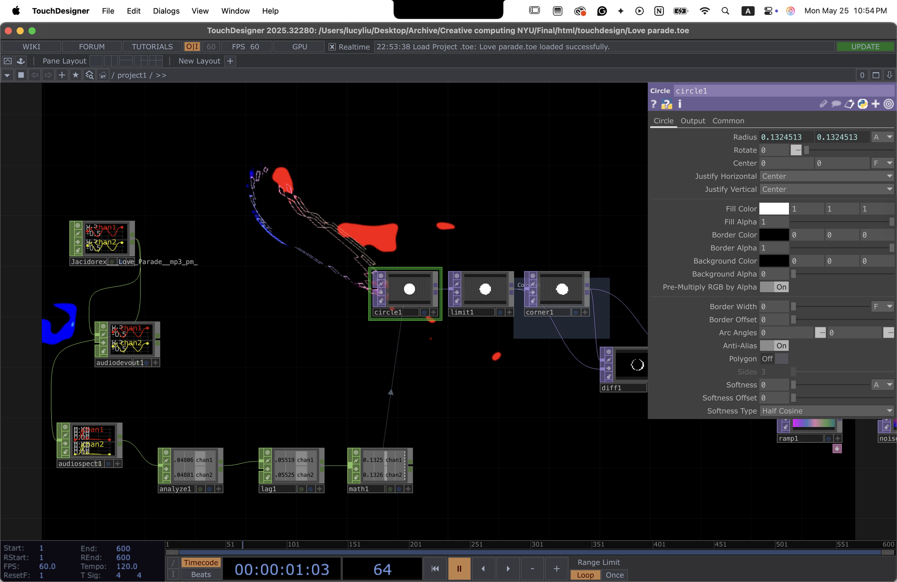

audio reactive
in touchdesigner
i've listened to music my whole life. young thug and lil uzi vert are my favorites, artists whose reach into fashion and visuals is as sharp as their music. in touchdesigner i build visuals that respond to tracks i love: frequency bands, percussive hits, the way a song breathes. i work in audio reactive because that's how i already hear music.
I designed and built the TouchDesigner networks, source treatments, motion systems, and final visual outputs.
I mapped each track to visual behavior, tuning frequency response, displacement, color, pacing, and source-video treatment.
The collection shows a repeatable creative-coding system: each piece has a distinct sonic logic and visual identity.
07 pieces
you know you like it
a plain ai-generated clip of a figure running in place becomes raw material for touchdesigner: the runner is torn into displaced, smeared passes that build and break with the track's energy. drag the divider to compare the untouched source against the processed output.
where are ü now
built around a noise SOP feeding into a displacement chain: the high and mid bands drive two separate displacement magnitudes so the form breathes with the melody and punches with the drop. a feedback loop with level-controlled opacity lets transients accumulate as trails before a final composite wipes the slate on each beat.
sdp interlude
concentric orbit rings drawn as circle SOPs, radius driven by low-frequency amplitude through a lag smoother. dot particles are instanced at jitter positions along each orbit: brightness and scatter respond to the spectral centroid so the field densifies when the song opens up and contracts on the drops.
sdp interlude ii
the same song, built from scratch with a different system. noise texture runs through five edge TOPs in sequence, stacking outlines until it looks like scratched film. feedb_level1 bleeds the previous frame back driven by low frequency and rhythm, transform2 tiles and shifts with the bass, then a sixth edge pass, displacement, and rgblevel3 pushed on contrast lands that crumpled-panel tiled look.
erase your social
i built the jellyfish body by copying a noise-deformed curve into ring copies with copy SOP and surfacing them with skin, then added sprinkle for scattered points across the membrane. the audioreactive rotation CHOP takes the snare and low frequency channels from the audioanalysis container and rotates the whole geometry, so the body spins and pulses with the song. noitransse handles the organic deformation, two lookup textures do the blue-to-purple color mapping, and the feedback blur on the render is what gives the outer edges that bioluminescent glow.
love parade
circle radius, corner pin warp, and feedback opacity all driven by a single audio spectrum, routed through audioAnalysis.tox, lag-smoothed so transients punch hard and silence goes invisible.
money longer
i composited stock flower blooming videos through moviefilein and ran blobtrack on the output, extracting centroid position and bounding box dimensions from each blob through a reorder chain so the tracking data maps directly into the geometry. the custom audioanalysis container has kick at threshold 0.293, snare at 0.3115, and rhythm all three active, with a lag CHOP smoothing the signal before it hits the noise displacement so the petals scatter and burst cleanly on each hit rather than jittering. ramp, reorder, and remap TOPs shape the output into that pink on black, and the feedback loop is what keeps petals trailing across frame after they scatter.

every parameter
wired to the sound.
audioAnalysis.tox is a shared container from the TouchDesigner community forum: it wraps an audiospect CHOP feeding into an analyze CHOP to extract per-band peak and RMS values. a lag CHOP downstream smooths the raw signal: attack is near-instant, release tuned by ear until harsh transients are stripped but rhythm stays readable. the smoothed channel is then math-remapped from the noise floor / peak range into 0–1 so TOPs can consume it directly. one channel drives the radius parameter on the circle TOP; a second, heavier-smoothed channel drives the corner pin TOP's displacement magnitude: the frame warps toward each beat, snaps back on the release. a difference composite blends the warped output against the previous frame, and a feedback loop with level-controlled opacity lets transient energy accumulate as trails. a final rgb key gates near-black silence to transparent so stillness collapses completely.